FastPath GUI User Manual
| Date: | 09/25/10 |
|---|
Table of Contents
1 Introduction
The FastPath GUI provides a simple and intuitive way of using the Chip Specification Language features on a design project. It is used to create the infrastructure for RTL, test-benches and SystemC. It allows the user to create the design hierarchy, connectivity library and connection table.
The FastPath GUI has a graphical interface written in QT but also supports command line parameters. It is started using the executable FastPath. The following sections cover the graphical interface.
1.1 The Project
The project inside the GUI is the representation of the actual design project. It has three main regions as can be seen in the screenshot:
- Design Hierarchy (highlighted with the green arrow) - contains the hierarchy of units
- Connectivity Library (highlighted with the blue arrow) - contains the items used for connecting modules
- Connection Table (highlighted with the red arrow) - contains the connections between the modules

1.1.1 Units
The unit is a design element similar to a Verilog module and it can be found in the Design Hierarchy. In a project there can only be a single unit as root for the entire Design Hierarchy.
1.1.2 Interfaces
The interface is a logical group of ports and other interface instances . It is attached to a unit. A unit can have one or more interfaces attached.
Interfaces are found in the Connectivity Library.
1.1.2.1 Ports
The port is the equivalent of a Verilog port. One or more ports can form an interface (see Interfaces ).
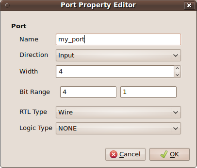As in other hardware description languages like verilog, a port has a number of attributes including the following:
- name - as presented in the screenshot above, it can be a group of letters and/or numbers without white spaces (use "_" instead).
- direction - can be one of:
- input
- output
- inout
- width or bit range - these two attributes are synchronized - changing one will result in the modification of the other.
- type - the RTL Type can be one of the following:
- wire
- wand
- wor
- tri
- triand
- trior
- tri0
- tri1
- supply0
- supply1
- reg
- integer
- time
- NONE
Usually in designs, a port has a special logical meaning, like a clock or reset signal. The user can select a Logic Type for each port that matches the meaning of the port. The GUI behaves differently for each port with special logical meaning.
The Logic Type can be one of the following:
- enable
- stall
- mux select
- decoded minterm
- decoded maxterm
- clock signal
- reset signal
- NONE
1.1.2.2 Interface Instances
Interface instances are used to create instances inside other instances. The restriction is that the interface hierarchy tree can not have a cyclic branch. This means that starting from each interface, we can not reach the same interface by descending in any of the interface hierarchy trees it has.
1.1.3 Signal Groups
A signal group is a collection of one or more signals. The signal has the attributes of a port with the exception of direction.
1.1.4 Connections and the Connection Table
A unit can communicate with another unit through interfaces. A connection is required to connect the interfaces and assign them to the corresponding units, thus an interface is instantiated inside an unit through the creation of a connection. Currently there is no other way of instantiating an interface in an unit.
All connections are added in the Connection Table. This table provides information regarding the interface type being connected, the name of the connection, the driver type (single or multi), the driver unit instance (where this driver resides), the interface instance name where the driver is connected (named driver connection instance), the type of the receiver (single or multi), the name of the receiving unit instance (receiver unit instance), the name of the interface instance receiving the connection (receiver connection instance).
Below we have an example of a connection named connection1 between an unit (my_unit2) and its parent (my_main_unit) through an interface of type my_int2. The driver is a single one, just like the receiver, named m1 and, respectively, r2.
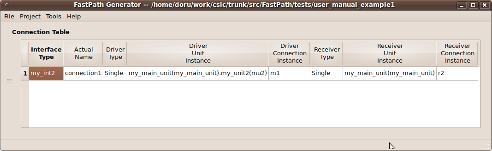1.1.5 Preferences
All projects have the same customization options which include:
These are accessible through the menu: Project -> Preferences
1.1.5.1 Netlisting Mode
In the netlisting mode the GUI should generate only instances with their attributes and their children. Everything else like simulation code should be stripped.
1.1.5.2 Floor Planning
If this option is selected then only the first and second level from the design hierarchy are used.
1.1.5.4 Generate Include Statements
If selected, this option instructs the GUI to automatically generate include statements in the .csl file. There is a global csl_include statement and one in the root unit. The csl file included is named after the project name and ends with the suffix _global_includes, for example:
csl_include "/absolute/path/to/project/my_project_name_global_includes.csl"
This file can be altered in order to use custom code.
Note: Use this method for features present in the CSL Compiler, however unsupported by the GUI.
2 Using the GUI
Note: The GUI tries to be as simple as possible, thus many actions can be performed by right-clicking on items.
The menu layout is comprised of four categories:
- File - allows the user to create, open, save projects or exit the application.
- Project - contains project related menus, like Preferences or CSL code generation.
- Tools - allows the user to select and run various tools, like the CSL Compiler.
- Help - provides access to the help options and About information.
2.1 Create a project
To create a new project select: File -> New
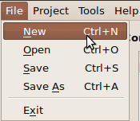This action prompts if there are unsaved items before creating a new empty project. Make sure to save your previous work when prompted since it will be permanently lost.
When an empty project is created, the unit hierarchy, connectivity library and the connection table are cleared, preferences are reloaded and the name of the project is undefined (the name of the project appears in the window title).
An empty project is not useful, let's add some units and interfaces, also let's create some connections between units using the created interfaces.
2.1.1 Add an unit
In order to add an unit right-click anywhere inside the Design Hierarchy area, even on other units in order to create a child unit, then select Add New Unit.

This adds a root unit if there is no other unit present before. Please remember that there can be only one root unit.
A new window pops up, the Unit Property Editor where the unit name, abbreviation and description can be entered:
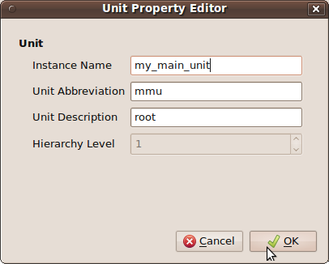Note: The Hierarchy Level is normally grayed and it displays a number representing the level in the unit hierarchy where the new unit is placed. 1 stands for the root unit.
Enter an unit name (should be unique), the optional abbreviation (in the future it may be used as a short name) and the optional description. When done press OK. The new unit will appear in the Design Hierarchy area.

The entire information in the design hierarchy is not visible. To increase the visibility of that region let us hide the connectivity library. Click and hold on the separator between them as shown in the picture below:

Drag the mouse to the right while keeping the mouse button pressed (as indicated above).

To unhide the connectivity library click and hold on the separator (highlighted with red) then drag the mouse to the left while keeping the button pressed (as indicated above). Note that next to the separator between the design hierarchy and the connectivity library there is the separator between the connectivity library and the connection table (highlighted with blue).
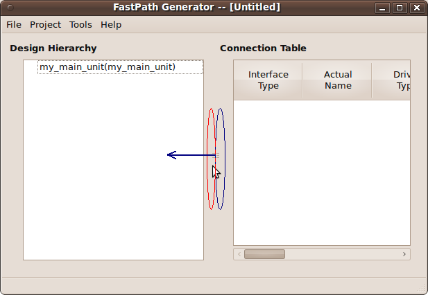Draging the later will make the design hierarchy area to shrink and the connectivity library to get bigger:

Do not panick if you dragged the wrong separator. Just drag the right one (highlighted with blue) to the right as shown below:

Let's add an unit instance to the root unit. Right click in the empty white space or on the root unit and select Add Unit Instance:

This window should open:

The field Unit name contains the type name of the unit. Currently it is my_main_unit. Let us change it to something else like dummy_master. This will create a new unit type called dummy_master after we press the OK button. Let's name the instance name as dummy_master_inst, the abbreviation for this instance as dminst and a description as master. Then press OK.

The gui should now look like this (notice that the new unit instance is created beneath the root unit and as its child):

Let's add some interfaces. For this unhide the connectivity library as described previously.
2.1.2 Add an interface
To add an interface (see chapter Interfaces for a description of the interface) right-click in the Connectivity Library area and select Add -> New Interface.
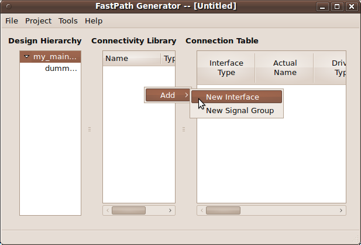In the new window enter the name of the interface, for example my_interface, and then press OK:
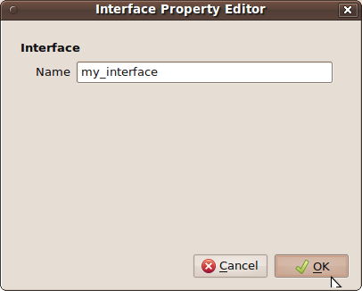The new interface will be added in the Connectivity Library:

Add a new interface by right-clicking in the connectivity library area (in the free space or even on other interfaces, ports, signals etc.). Select Add and then New Interface:

In the window that opens, name the new interface as bus_interface and then press the OK button:

This will add a new interface type named bus_interface:

Let's add an interface instance to my_interface. In order to add an interface instance to an interface, right click on the interface where you want to put the instance, in this case right-click on my_interface, select Add -> Interface Instance:

In the window that opens, select the interface instance type from the drop-down list next to Name. Note that you can not select as type the same interface like the one where you want to add the instance, in this case my_interface. You can not create recursive interfaces. Select bus_interface. Next, enter the name of the interface instance, for example bus_inst, and then press OK.

A new child will be added in the Connectivity Library under the interface my_interface. The name of the instance is in parenthesis:

Add a port to my_interface. Right-click on it, select Add -> Port :
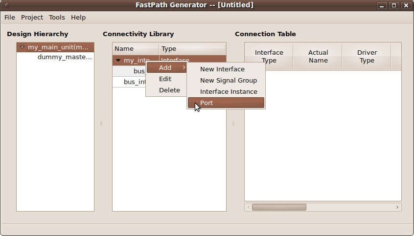A new window will open which allows you to add a port (see ports for a description). Name the port my_int_clock and all the other fields as below:

Pressing OK will add a port to the interface my_interface.
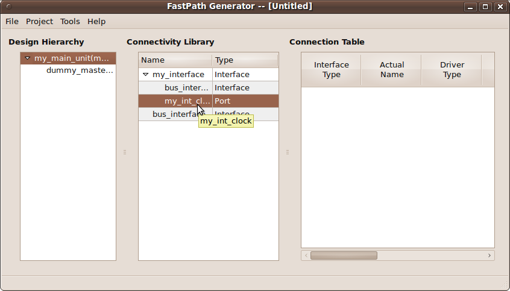Note: Double-click on any column separator to automatically adjust column width to fit contents.
 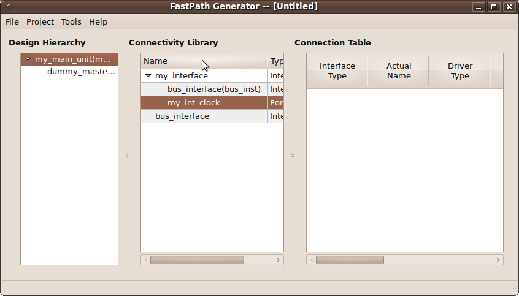
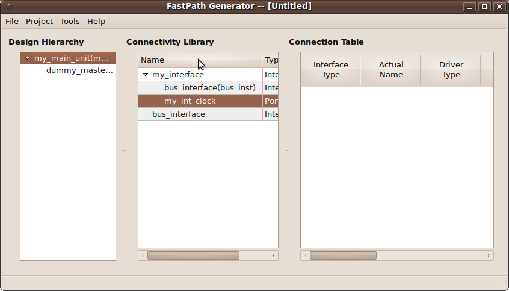
Add a new port to the bus_interface:

In the window that opens, named Port Property Editor, let's enter the information as seen:
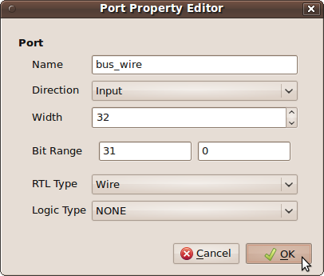Pressing the OK button will add a new input port with the width 32 to bus_interface. This change will reflect on the bus_inst interface located in my_interface.

Let's add another interface named bus_out_int with one output port named bus_wire_out with the properties seen below:
 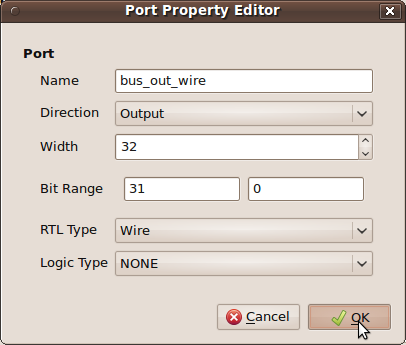
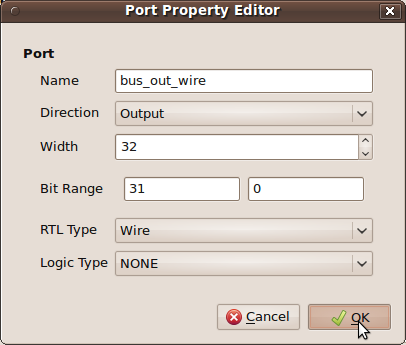

After adding some units and interfaces, let's create some connections.
2.1.3 Make a connection
To make a connection (see Connections and the Connection Table for more information) right-click in the Connection Table area (either on the free space or on the name of another connection) and select Add Connection.
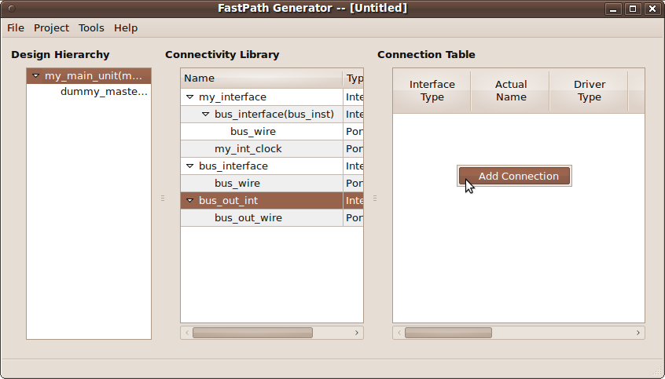In the new window named Interface Connection, select the Connection Type as Interface from the drop-down menu, enter the Actual Name as mmu2dminst and select the Library Interface as my_interface. Then press OK.
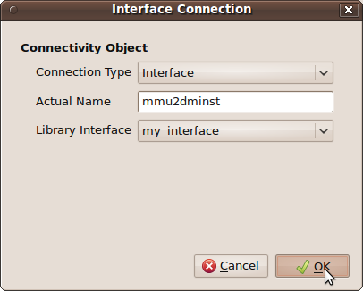The above action will create an empty connection in the connection table, with no driver or receiver. For more information on how to edit a connection in order to add a driver and receiver, see how to edit connections .

After creating all this, we should save the project.
2.2 Save and Open a Project
The project information is stored in a file named after the project and it has the extension .csl.xml . The generated csl code is located in a file named after the project with only the .csl extension.
For example, if the project is named my_project then the following files are located in the project directory:
- my_project.csl.xml - contains project information in xml format
- my_project.csl - contains generated csl code
- my_project_global_includes.csl - this file is optional, please see Generate Include Statements for more information
To save a project, select File from the menu and then Save, or press CTRL+S. In case that the project is unnamed (is a new one) then a name can be chosen in the window that opens or by selecting Save-as in the File menu instead of Save:
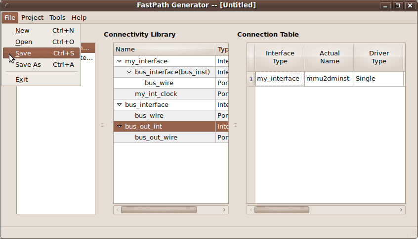Name the project as my_project:

Pressing the Save button will save the .csl.xml file and generate the csl code. This will change the title of the application's main window:
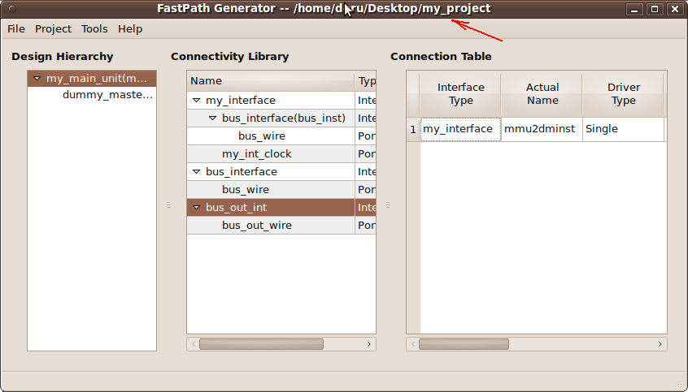To generate csl code at any time, select Project -> Generate CSL menu.

To open a project select File and then Open, or CTRL+O.

Select the project you want to open and then press Open.
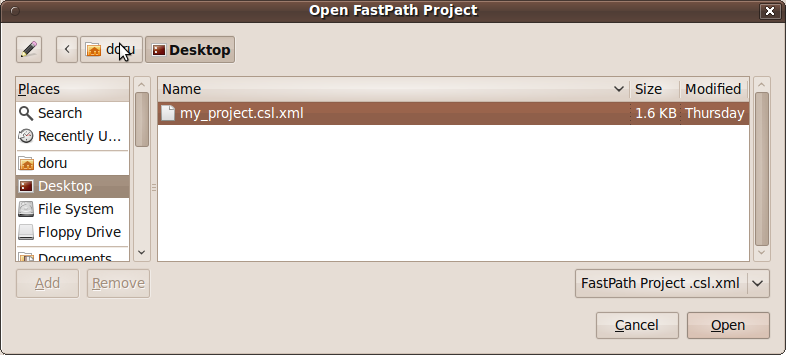Opening the current loaded project will prompt to reload the project.
2.3 Edit a project
2.3.1 Edit Units
To edit an unit right click on the wanted unit and select Edit Unit. Only the unmodifiable attributes should be grayed out like in the following image:
The name of the unit can be an already created unit type selected from the drop-down list or it can be manually entered.
The instance name must be unique.
The modifications are saved when the OK button is pressed.
To delete an unit, right click on it and then select Delete. Confirm the deletion by pressing the OK button.

2.3.2 Edit Interfaces
Right-clicking on an interface and then selecting Edit will open the Interface Property Editor for that interface. The name of that interface can be edited unless it is already in use in a connection.
To delete an interface, right click on it and then select Delete. Confirm the deletion by pressing the OK button.
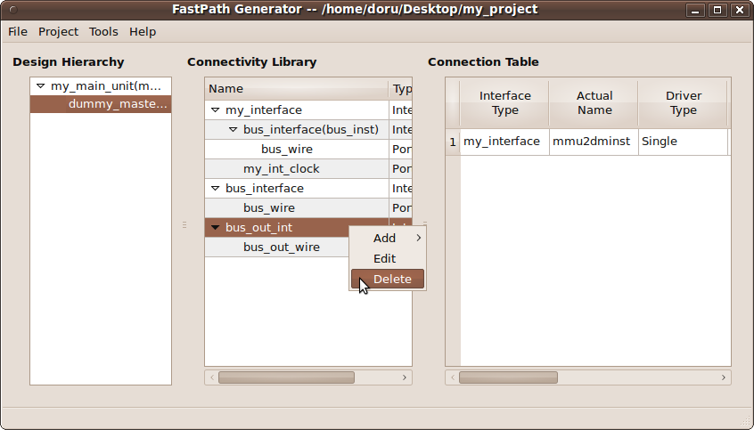2.3.3 Edit Signal Groups
Right-clicking on a signal group and then selecting Edit will open the Signal Group Property Editor for that signal group.
To delete a signal group, right click on it and then select Delete. Confirm the deletion by pressing the OK button.
2.3.4 Edit Connections
To edit a connection properties like name and library interface, right click on the interface type name of the connection (column Interface Type in the connection table) and then select Edit Connection.
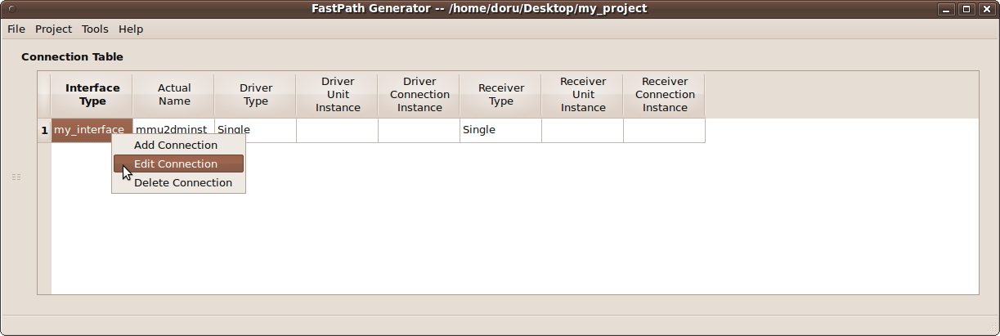To add a driver for a connection right-click either in the column Driver Unit Instance or Driver Connection Instance of the connection table and then select Add Driver:
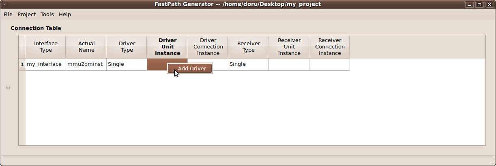Let's edit the connection from the previous chapter when we learned how to make a connection. Add a driver to the connection named mmu2dminst. A new dialog opens in which can be selected the unit interface and the corresponding interface instance name:

The above will add a driver named main_unit_driver in my_main_unit instance. The driver is of type instance named my_instance as seen in the connection.
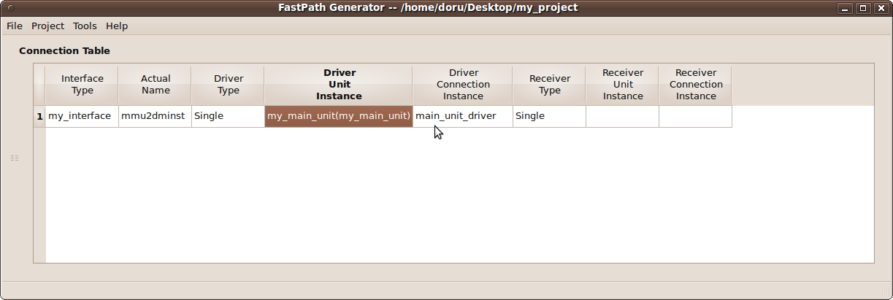Let's add a receiver in the unit dummy_master_inst instance. This will complete the connection between the my_main_unit instance and dummy_master_inst instance. Right-click on either Receiver Unit Instance or Receiver Connection Instance column belonging to the mmu2dminst connection.
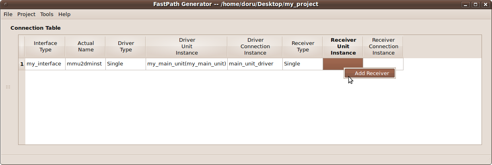Select the unit instance that houses the receiver as the dummy_master_inst from my_main_unit. Name the receiver dum_receiver_inst as seen below:
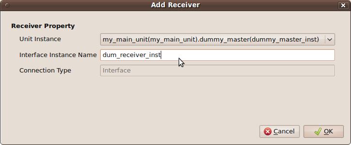The connection table should look like this:
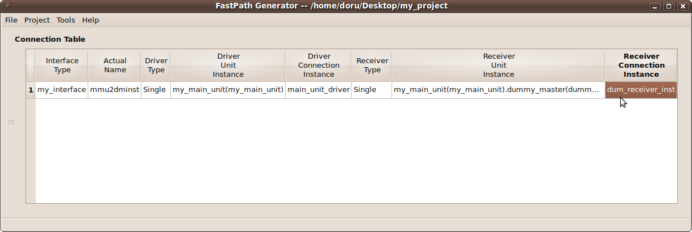A multi driver connection is created by adding a new driver to a connection that already has one or more drivers. A new line below the selected connection will contain the same information but with the new driver. It can be modified if necessary.
A multi receiver connection is created in the same way as a driver. Please make sure to connect the proper driver with the proper receiver in the intended unit.
To delete a connection, driver or receiver, right click on it and then select Delete. Confirm the deletion by pressing the OK button.

 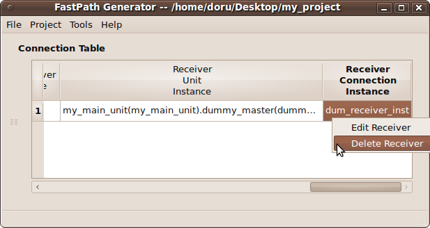
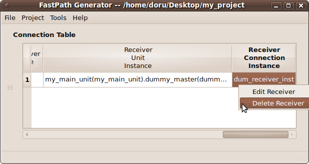
Let's create a bus split using the driver from my_main_unit to connect with another unit, like dum_slave_inst. Create the unit dum_slave_inst in my_main_unit like described in chapter Add an unit :

Add a driver to connection mmu2dminst. Select the my_main_unit instance as unit instance and then press OK:
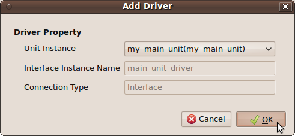The connection table contains the new driver on the next line:
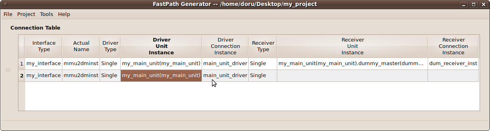Next, add a receiver to the connection by right-clicking on either Receiver Unit Instance or Receiver Connection Instance column belonging to the mmu2dminst connection on line 2:

Select as unit instance the dum_slave_inst instance:
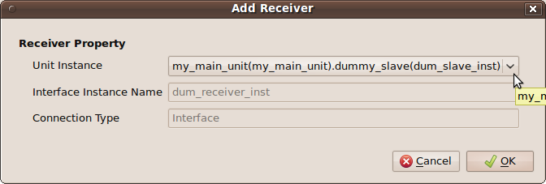The connection table now has a connection with a single driver and multiple receivers, meaning that it is a bus split connection type.

2.4 Tools Menu
2.4.1 Compiling CSL
Compiling the csl code for the project can be done from the GUI:
- make sure that the project uses the cslc compiler by selecting the cslc binary in the Tools -> Options menu:
- generate the csl code (it may already be generated when the project is saved): Project -> Generate CSL
- start the compilation process by selecting Tools -> Compile CSL or by pressing CTRL+E. A console will open containing the results of the compilation.
3 Other
3.1 General tips
3.1.1 GUI
- Usually, double clicking on the separator between two columns will automatically resize the left column to fit it's contents.
- To make more space, the three areas, Design Hierarchy, Connectivity Library and Connection table can be hidden by dragging the separator between them (indicated by the mouse arrow in the pictures below) to left or right:
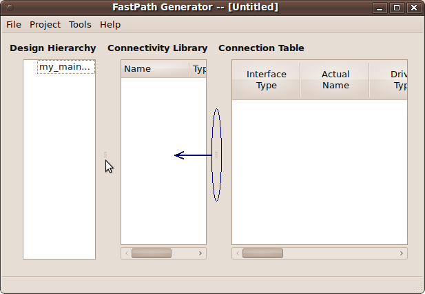
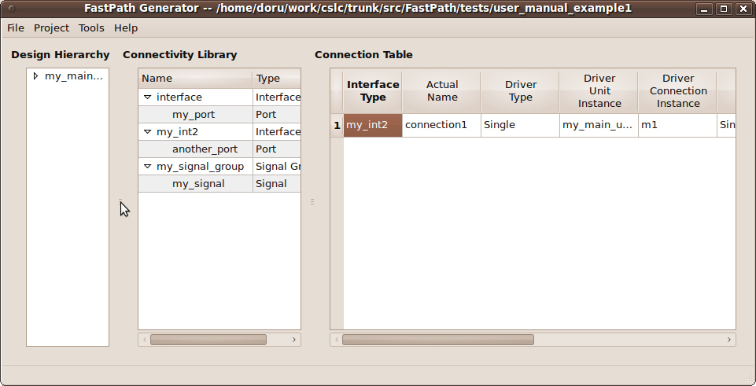

- Using keyboard shortcuts whenever possible speeds up the design process
- Various actions can be implemented with an external editor of choice that can read the .csl.xml project file if the editor is too slow.
- Altering the project file outside the gui will prompt the user to reload the project.
3.2 Reporting Bugs
Please report any bugs to TO BE COMPLETED